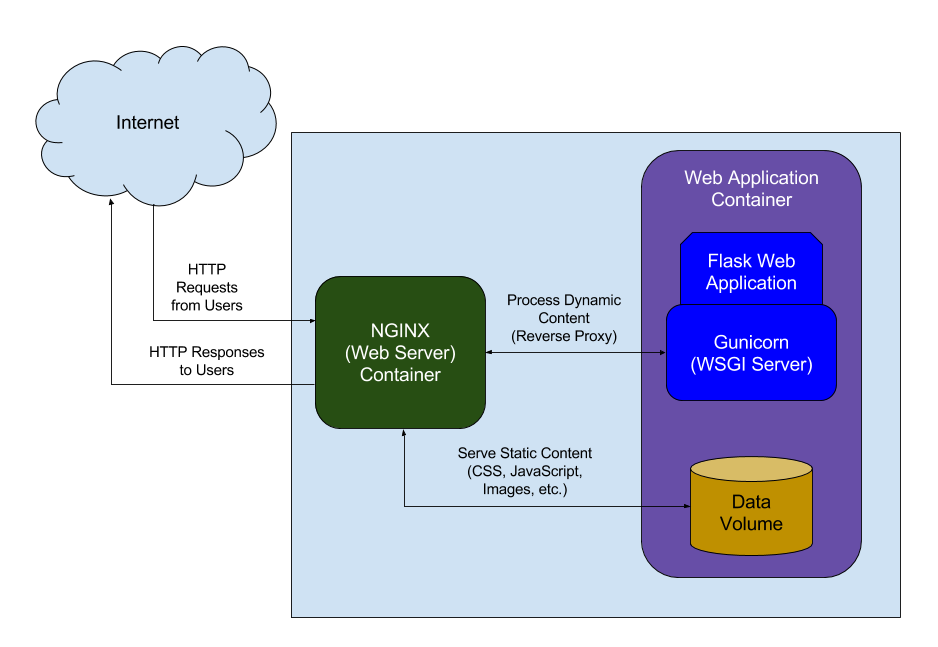

前言
在现代软件开发流程中，为开发项目配置一套持续集成（Continuous Integration，简称CI）系统是非常有必要的。持续集成的目的，是为了让软件产品在快速迭代的同时，还能保持高质量，减少Bug。持续集成的核心思路是：在分支代码合并到主分支之前，必须跑通自动化测试。
“Continuous Integration doesn’t get rid of bugs, but it does make them dramatically easier to find and remove.” — Martin Fowler
常用持续集成（CI）工具
下面列出了一些目前比较流行的持续集成（CI）工具。
- Jenkins
- Travis CI
- Circle CI
- GitLab CI
- Bamboo
- …
在为项目选择持续继承（CI）工具时，需要考虑的一点是：使用本地解决方案还是选择托管服务。
本地解决方案为构建过程提供了足够的灵活性，所有的项目信息都被存储在本地。而使用托管服务，则不需要考虑硬件方面的问题，配置简单。如何取舍，需要根据项目的实际情况而定。
WebHooks实现自动代码同步
Travis CI 是老牌的托管解决方案提供商之一，赢得了很多人的信任。其对开源项目提供免费服务，GitHub上诸多开源项目都选择 Travis CI 。
Travis CI的持续集成（CI）通过.travis.yml文件进行配置，该文件包含了在构建时所需要执行的任务，支持多种语言并提供完善的帮助文档。
Travis CI：https://travis-ci.com
Travis CI 有个不太好的地方，就是与GitHub的强绑定。这意味着，如果我们的开发项目没有托管在GitHub上，使用Travis CI 就会不太方便。所幸的是，主流Git代码托管平台都提供了WebHooks服务。
Travis CI 配置文档：https://docs.travis-ci.com/user/getting-started/#Prerequisites
以码云（Gitee）代码托管平台为例，码云（Gitee）提供WebHooks功能，可以在我们每次提交代码后，向指定的地址POST一条JSON消息，我们就可以根据该消息，来自动拉取托管在码云（Gitee）上的项目代码，再推送至GitHub，实现自动代码同步功能。
自动代码同步服务并不局限于特定语言，特定框架，只要能处理HTTP请求即可。为了简便，个人使用Python Flask框架来搭建自动代码同步服务（Web Service）。代码逻辑也非常简单：获取JSON消息，提取目标数据，根据目标数据执行相关Git操作。

图：自动代码同步服务（Web Service）架构图
...
# 处理来自码云（Gitee）的`JSON`消息
@app.route('/', methods=['POST'])
def do_webhooks()
# 获取`JSON`消息
data = json.loads(flask.request.data)
# 提取目标分支
target_branch = data['ref'][data['ref'].rfind('/') + 1 : ]
# 提取分支状态（创建新分支，删除已有分支）
target_status = (data['created'], data['deleted'])
# 将目标参数传入脚本执行Git操作
r = subprocess.run(['bash', './git_process.sh',
target_branch, str(target_status[0]), str(target_status[1])],
stdout = subprocess.PIPE, stderr = subprocess.PIPE)
# 打时间戳
return "callback status: done" + '\r\n' + \
"server timestamp: " + \
time.asctime(time.localtime(time.time()))
...
代码清单：自动代码同步服务（Web Service）核心代码
在git_process.sh脚本中，根据传入的命令行参数，执行相应git操作即可。
#!/bin/bash
# 进入项目目录
P_DIR='/path/to/project'
cd ${P_DIR}
# 接受命令行参数（分支, 状态）
T_BRANCH=${1}
T_CREATE=${2}
T_DELETE=${3}
# 提交操作
if [[ ${T_CREATE} == 'False' && ${T_DELETE} == 'False' ]]
then
# 从 Gitee 拉取最新代码 ->
# 移动到目标分支 ->
# 合并最新代码 ->
# 上传至 GitHub
git fetch origin -p && \
git checkout ${T_BRANCH} && \
git pull origin ${T_BRANCH} && \
git push github ${T_BRANCH}
# 创建新分支操作
elif [[ ${T_CREATE} == 'True' && ${T_DELETE} == 'False' ]]
then
git fetch origin -p && \
git checkout ${T_BRANCH} && \
git pull origin ${T_BRANCH} && \
git push github ${T_BRANCH}
# 删除分支操作
elif [[ ${T_CREATE} == 'False' && ${T_DELETE} == 'True' ]]
then
git fetch origin -p && \
git checkout master && \
git push github --delete ${T_BRANCH}
else
# 打印错误信息
echo 'error: unknown operation'
fi
代码清单：自动代码同步服务（Web Service）操作代码
Travis CI 自动化部署
持续集成的另一重要用途就是实现自动化部署。项目代码跑通自动化测试程序后，执行自动部署程序，将程序部署到生产服务器上去。
最简单的一种部署方式便是使用scp：直接将目标代码目标程序远程拷贝到生产服务器上。这里就会遇到一个问题，ssh默认需要交互式输入密码，自动化场景不适用。如果配置ssh密钥方式登陆，也会很不方便（需要在开发机与服务器上都做相应配置）。
一种解决方案是：使用sshpass插件。这款插件可以自动输入ssh密码，不需要交互式环境，可以很方便实现基于scp的自动化部署方案。
另外，我们还需要在scp命令中加入stricthostkeychecking=no选项，禁用掉ssh在初次访问远程服务器时的交互式认证问询。
#!/bin/bash
...
sshpass -p ${DEPLOY_PASS} \
scp -P ${PORT} -o stricthostkeychecking=no \
-r ${DIST} "${DEPLOY_USER}@${DEPLOY_SERVER}:${DEPLOY_PATH}"
...
代码清单：
sshpass实现自动化部署
参考资料
- StackOverflow问答（如何对特定分支执行任务）：https://stackoverflow.com/questions/31338562/travisci-run-after-success-on-a-specific-branch
- 禁用 SSH 远程主机的公钥检查：http://www.worldhello.net/2010/04/08/1026.html
- SSH 远程执行
nohup命令不退出：https://blog.csdn.net/oneinmore/article/details/50073443